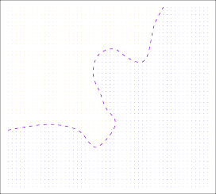

| < 2.1.3 The Trade-Off Between Prediction Accuracy And Model Interpretability | 2.1.5 Regression Versus Classification Problems > |
💡 학습 팁: 조금 더 쉽고 재미있게 공부하고 싶으신가요? 이 페이지는 중학생도 이해할 수 있는 친절한 ‘쉬운 해설판’입니다! 영어 원문을 문장 단위로 꼼꼼하게 번역한 느낌을 원하신다면 📖 직역본 보기 메뉴를 활용하세요!
2.1.4 Supervised Versus Unsupervised Learning
2.1.4 지도 학습 대 비지도 학습 (과외 선생님이 있는 방과 없는 방)
Most statistical learning problems fall into one of two categories: supervised or unsupervised. 세상 모든 인공지능과 통계학 문제들의 99%는 딱 두 개의 방으로 강제 배정됩니다. 바로 정답을 알려주는 과외 선생님이 있는 지도(Supervised) 방과, 정답 없이 애들끼리 방치되는 비지도(Unsupervised) 방이죠.
The examples that we have discussed so far in this chapter all fall into the supervised learning domain. 우리가 지금까지 앞선 목차에서 침 튀기며 떠들었던 그 수많은 예시들(광고비로 매출 맞추기 등)은 싹 다 과외 선생님이 있는 온실 속 ‘지도 학습’ 영역의 이야기였습니다.
For each observation of the predictor measurement(s) $x_i$, $i = 1, \dots, n$ there is an associated response measurement $y_i$. 지도 학습 방의 특징은 아주 명확합니다. 우리가 가진 각 아저씨들의 힌트 데이터 모음($x_i$)마다, 꼬리표처럼 “이 아저씨의 진짜 월급은 이거야!” 하는 확실한 짝꿍 정답지($y_i$)가 항상 찰싹 달라붙어 매칭되어 있거든요.
We wish to fit a model that relates the response to the predictors, with the aim of accurately predicting the response for future observations (prediction) or better understanding the relationship between the response and the predictors (inference). 선생님이 정답지를 뻔히 쥐고 있으니까, 우리는 그저 힌트(예측 변수)와 정답(응답)을 잇는 공식을 어떻게든 끼워 맞춰서(적합), 미래에 들어올 모의고사 점수를 잘 찍거나(예측), 둘 사이가 대체 무슨 끈끈한 관계인지 속셈을 파헤치는(추론) 아주 명확한 목표를 향해 달릴 수 있습니다.
Many classical statistical learning methods such as linear regression and logistic regression (Chapter 4), as well as more modern approaches such as GAM, boosting, and support vector machines, operate in the supervised learning domain. 고전의 명작 선형 회귀나 로지스틱 회귀(4장) 같은 틀딱 무기들부터, GAM, 부스팅, 서포트 벡터 머신 같은 최첨단 삐까뻔쩍한 현대식 무기들까지 거의 다 이 따뜻한 ‘지도 학습’ 방구석 치고받는 세계관에서 작동합니다.
The vast majority of this book is devoted to this setting. 사실 여러분이 들고 계신 이 두꺼운 책 내용의 9할 이상이 다 이 지도 학습 판에서 벌어지는 일들을 다루고 있습니다.
By contrast, unsupervised learning describes the somewhat more challenging situation in which for every observation $i = 1, \dots, n$, we observe a vector of measurements $x_i$ but no associated response $y_i$. 이와 지독하게 대조적으로, ‘비지도(Unsupervised) 학습’ 방은 아주 극강의 헬난이도 상황을 묘사합니다. 여기선 1번 아저씨부터 $n$번 아저씨까지 힌트($x_i$)는 잔뜩 끌어모았는데, 그 누구도 진짜 정답($y_i$)이 뭔지 전혀 알려주지 않고 싹 다 백지로 날아가 버린 상태입니다!
It is not possible to fit a linear regression model, since there is no response variable to predict. 정답지가 아예 증발했으니 맞출 타겟조차 없는 셈입니다. 타겟이 없는데 어떻게 선형 회귀로 선을 그어 맞추겠어요? 아예 시도조차 불가능합니다!
In this setting, we are in some sense working blind; the situation is referred to as unsupervised because we lack a response variable that can supervise our analysis. 이런 끔찍한 설정에서 통계학자들은 그야말로 눈에 안대를 차고 장님처럼 더듬거리는 꼴입니다. 우리의 삽질(분석)을 옆에서 “야, 그게 정답이잖아!” 하고 채점해줄(지도해줄) 정답 변수 선생님이 없기 때문에, 우리는 이걸 슬프게도 ‘지도받지 못하는(비지도)’ 버려진 상황이라고 부릅니다.
What sort of statistical analysis is possible? 아니, 정답도 없는데 대체 무슨 얼어 죽을 통계 분석을 하겠다는 거죠?
We can seek to understand the relationships between the variables or between the observations. 비록 정답을 맞춰서 상금을 타낼 순 없지만, 우리는 대신 방바닥에 뿌려진 데이터 점(관측치)들끼리 옹기종기 어떻게 모여있는지, 혹은 힌트 변수들끼리 어떻게 짝짜꿍이 맞는지 그 은밀한 관계망(패턴) 자체를 훔쳐보는 것에 집착하게 됩니다.
One statistical learning tool that we may use in this setting is cluster analysis, or clustering. 이런 암흑의 방에서 우리가 손전등처럼 쓰는 가장 대표적인 도구가 바로 비슷한 놈들끼리 묶어서 패거리를 갈라버리는 ‘군집 분석(Cluster analysis)’ (혹은 클러스터링) 기법입니다.
The goal of cluster analysis is to ascertain, on the basis of $x_1, \dots, x_n$, whether the observations fall into relatively distinct groups. 클러스터링의 최고 목표는 힌트 데이터들($x_1, \dots, x_n$)을 이리저리 째려보고 냄새를 맡아서, “어라? 이거 점들끼리 끼리끼리 모여서 몇 개의 뚜렷한 파벌(그룹)을 만들고 있네?” 라는 걸 눈치채는 겁니다.
For example, in a market segmentation study we might observe multiple characteristics (variables) for potential customers, such as zip code, family income, and shopping habits. 예를 하나 들어볼까요? 대형 마트 사장님이 동네 잠재 고객들을 탈탈 털어서 우편번호(사는 동네), 집구석 재산 규모, 마트에서 주로 뭘 담는지 쇼핑 취향 등등(다양한 힌트 변수들)을 쫙 스캔했다고 칩시다.
We might believe that the customers fall into different groups, such as big spenders versus low spenders. 사장님은 분명 “우리 동네 손님들은 한 번 오면 돈을 쓸어 담는 VIP 부자 파벌과, 100원짜리 콩나물만 깎는 짠돌이 파벌로 확 갈릴 거야!”라고 굳게 믿고 있을 겁니다.
If the information about each customer’s spending patterns were available, then a supervised analysis would be possible. 물론 각 손님 이마에 “나 한 달에 100만 원 쓰는 부자야!”라고 정답(소비 패턴 금액)이 떡하니 적혀있었다면, 그냥 아까 파트에서 배운 지도 분석 방으로 끌고 가서 모델을 돌리면 끝났겠죠.
However, this information is not available—that is, we do not know whether each potential customer is a big spender or not. 하지만 현실은 늘 거지 같습니다! 그 VIP 정답표(정보)가 마트 컴퓨터에 저장이 안 되어 있는 겁니다. 즉, 저 손님이 돈을 팍팍 쓰는 VIP인지 거지인지 우리는 도통 정답을 알 길이 없습니다.
In this setting, we can try to cluster the customers on the basis of the variables measured, in order to identify distinct groups of potential customers. 그래서 이 비지도 세팅의 마트 사장님은 정답 맞추기를 포기하고, 대신 힌트 변수들만 믹서기에 넣고 클러스터링(비슷한 놈 묶기) 을 시도합니다. “사는 동네도 비슷하고 쇼핑 품목도 비슷한 놈들끼리 일단 파벌을 지어서 묶어보자!” 하고 잠재 고객들을 찢어놓는 거죠.
Identifying such groups can be of interest because it might be that the groups differ with respect to some property of interest, such as spending habits. 이렇게 꾸역꾸역 찾아낸 패거리(그룹)를 분석하는 건 꽤나 쏠쏠합니다. 왜냐하면 그렇게 묶인 그룹들이 까보면 실제로 짠돌이파/부자파 같은 ‘돈 쓰는 습관(관심 속성)’을 기준으로 기가 막히게 갈라져 있을 확률이 아주 높거든요!

FIGURE 2.8. A clustering data set involving three groups. Each group is shown using a different colored symbol. Left: The three groups are well-separated. In this setting, a clustering approach should successfully identify the three groups. Right: There is some overlap among the groups. Now the clustering task is more challenging.
그림 2.8. 비슷한 놈들끼리 뭉치는 클러스터링 예제입니다. 각 패거리(그룹)를 다른 색깔로 칠해봤죠. 왼쪽 도화지를 보세요. 파벌 3개가 너무나도 뚜렷하게 멀찍이 떨어져 있죠? 이런 개꿀 환경에선 클러스터링 기계가 식은 죽 먹기로 세 그룹을 아주 정확하게 찾아냅니다. 반면 오른쪽 도화지는? 점들이 가운데서 서로 치고받으며 오버랩(중첩) 되어 섞여있죠. 이젠 기계도 파벌을 찢어놓기 위해 머리가 깨지기 시작(까다로운 헬난이도) 합니다.
Figure 2.8 provides a simple illustration of the clustering problem. 그림 2.8은 방금 설명한 끼리끼리 뭉치는 ‘클러스터링(군집화)’ 문제가 어떻게 생겨 먹었는지 유치원생 눈높이로 보여주는 그림입니다.
We have plotted 150 observations with measurements on two variables, $X_1$ and $X_2$. 도화지 위에 점이 150개나 찍혀있는데, 이 녀석들은 가로($X_1$)랑 세로($X_2$) 딱 두 가지 힌트만 가진 관측치들입니다.
Each observation corresponds to one of three distinct groups. 사실 이 150명의 점들은 출신 성분에 따라 정확히 3개의 파벌(뚜렷한 그룹) 중 하나에 속박되어 있습니다.
For illustrative purposes, we have plotted the members of each group using different colors and symbols. 독자 여러분이 구경하기 편하라고(설명 목적) 조물주인 우리는 각 파벌 애들의 색깔과 모양(기호)을 빨녹파로 예쁘게 칠해놨습니다.
However, in practice the group memberships are unknown, and the goal is to determine the group to which each observation belongs. 하지만! 진짜 불쌍한 현실의 분석가들 모니터엔 색깔 따윈 없습니다. 소름 돋게 전부 시커먼 먹물 점으로 보이죠(소속을 모름). 그래서 이 찍혀있는 시커먼 점들을 요리조리 따져서 “너는 파란색 파벌 소속이구나!” 하고 멤버십 소속을 때려 맞추는 게 클러스터링의 최종 미션입니다.
In the left-hand panel of Figure 2.8, this is a relatively easy task because the groups are well-separated. 그림 2.8의 왼쪽 예시는 워낙 자기들끼리 삼삼오오 거리를 두고 떨어져 있어서, 눈 감고 찍어도 그룹을 분리해 낼 수 있는 허접한 과제입니다.
By contrast, the right-hand panel illustrates a more challenging setting in which there is some overlap between the groups. 그와 반대로 오른쪽 예시는 헬파티가 열렸습니다. 색깔 모르는 시커먼 놈들이 국경선 근처에서 막 뒤엉켜(중첩되어) 있어서, 누가 어느 팀 소속인지 경계선을 긋기가 극도로 빡센 세팅을 보여주고 있죠.
A clustering method could not be expected to assign all of the overlapping points to their correct group (blue, green, or orange). 솔직히 저렇게 중간에 끼어서 박 터지게 겹치는 애들은, 아무리 인공지능 클러스터링 할아버지가 와도 100% 정답(파랑, 초록, 주황) 팀으로 완벽하게 골라낼 거라고 결코 기대할 수 없습니다.
In the examples shown in Figure 2.8, there are only two variables, and so one can simply visually inspect the scatterplots of the observations in order to identify clusters. 사실 그림 2.8 예제는 힌트가 꼴랑 두 개($X_1, X_2$)라서 모니터에 평면(산점도)으로 직접 스윽 그려놓고, 사람 눈알 성능(시각적 조사)만으로도 “어 저기 뭉쳐있네!” 하고 쉽게 패거리를 찾아낼 수 있었습니다.
However, in practice, we often encounter data sets that contain many more than two variables. 하지만, 우리네 지옥 같은 현업 프로젝트에선 힌트 2개가 뭡니까? 변수가 수십 개, 수천 개나 드글드글한 끔찍한 데이터셋들을 밥 먹듯이 만나게 됩니다.
In this case, we cannot easily plot the observations. 이러면 우리는 공간의 차원이 폭발해버리기 때문에 더 이상 허공에 점을 찍어(도식화) 눈으로 확인할 수가 없게 됩니다. 눈알은 3차원까지만 볼 수 있으니까요!
For instance, if there are p variables in our data set, then $p(p - 1) / 2$ distinct scatterplots can be made, and visual inspection is simply not a viable way to identify clusters. 예를 들어 힌트(변수)가 $p$ 개나 모여있다면, 인간이 눈으로 일일이 확인하려면 두 개씩 짝지어서 그린 도화지 세트 결합표를 무려 $p(p - 1) / 2$ 장이나 만들어야 눈알이 빠지도록 봐야 합니다. 애초에 말도 안 되는 쓸데없는 삽질(실행 불가능)이죠!
For this reason, automated clustering methods are important. 이런 한심한 육체노동과 한계 때문에, 사람이 자면 알아서 고차원의 힌트들을 수백 차원으로 휘젓고 다니며 점들의 파벌을 갈라주는 자동화 클러스터링(기계 학습) 기술이 빛을 발하며 그토록 중요한 겁니다.
We discuss clustering and other unsupervised learning approaches in Chapter 12. 이 멋진 클러스터링과 정답 없는 암흑 방(비지도 학습)에서 생존하는 법은, 저~기 먼 미래인 12장에서 거하게 다루겠습니다.
Many problems fall naturally into the supervised or unsupervised learning paradigms. 자, 이처럼 세상의 문제들은 웬만하면 과외 선생이 있는 ‘지도형’과 없는 ‘비지도형’ 두 패러다임 중 하나에 얌전하게 자기 발로 찾아가서 안착합니다.
However, sometimes the question of whether an analysis should be considered supervised or unsupervised is less clear-cut. 하지만 아주 짜증나게도 가끔 세상엔 “이게 과외 선생님이 있는 거야, 반쯤 나간 거야?” 하고 구분이 아주 무자비하게 애매모호한(칼로 무 자르듯 안 나눠지는) 변종 문제 상황도 불쑥불쑥 튀어나옵니다.
For instance, suppose that we have a set of n observations. 예를 들어볼게요. 우리가 또 기가 막히게 조사를 해서 n 명 아저씨의 관측치 데이터를 장부에 빼곡히 모아왔다고 칩시다.
For m of the observations, where $m < n$, we have both predictor measurements and a response measurement. 장부를 펼쳐보니, 전체 n 줄 중에서 운 좋은 일부 m 명의 아저씨들은 힌트(예측 변수 측정치)도 있고, 귀중한 정답지(응답 측정치)도 예쁘게 세트로 채워져 있습니다. 와! 이건 전형적인 지도 학습 데이터죠!
For the remaining $n - m$ observations, we have predictor measurements but no response measurement. 근데 젠장! 나머지 잔챙이 찌꺼기 아저씨들($n - m$ 명) 줄을 보니까, 피 검사지(힌트) 결과만 있고 정답(쇼크사 여부, 응답 측정치) 칸은 모조리 빵꾸가 나서 백지상태입니다. 이건 또 비지도 학습 데이터잖아요?
Such a scenario can arise if the predictors can be measured relatively cheaply but the corresponding responses are much more expensive to collect. 대체 왜 이런 미친 장부가 나오냐고요? 현장에선 이게 국룰입니다. 피검사 힌트(예측 변수)를 뽑는 건 동네 의원에서 만원이면 끝나서 상대적으로 헐값에 왕창 긁을 수 있죠. 근데 진짜 정답인 쇼크 부작용 여부는 무려 사람 목숨을 걸거나 수백만 원짜리 정밀 검사 기계에 집어넣어 구해야 하니까 너무 비싸서 몇 명밖에 돈을 못 지불(수집)한 겁니다.
We refer to this setting as a semi-supervised learning problem. 결국 절반은 정답이 있고, 절반은 정답이 없는 이 괴상망측한 짬짜면 같은 반반 무 많이 세팅을 폼나게 전문 용어로 ‘반지도 학습(Semi-supervised learning)’ 문제라고 부릅니다.
In this setting, we wish to use a statistical learning method that can incorporate the m observations for which response measurements are available as well as the $n - m$ observations for which they are not. 지도냐 비지도냐 사이에서 줄타기하는 이 야비한 판에서는, 정답이 있는 m 명의 모범생 데이터와 정답을 잃어버린 불쌍한 $n - m$ 명의 문제아 데이터를 기계 안에 꾹꾹 욱여넣고 “니들 어떻게든 짬뽕으로 합쳐져서 답을 하나 토해내 봐라!” 하고 통계 기법에게 빌게 되죠.
Although this is an interesting topic, it is beyond the scope of this book. 이 반반 무 많이(반지도) 시스템이 돌아가는 꼴은 솔직히 피가 끓게 재밌는 연구 주제이긴 합니다. 하지만… 억울하게도 이 얄팍한 입문용 교과서의 난이도 선(범위)을 아득히 뛰어넘어 버리기 때문에 우린 여기까지만 하고 눈물을 머금고 쿨하게 패스하겠습니다!
Sub-Chapters (하위 목차)
| < 2.1.3 The Trade-Off Between Prediction Accuracy And Model Interpretability | 2.1.5 Regression Versus Classification Problems > |